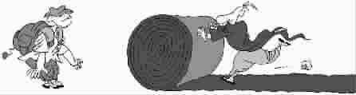

奇特的挂号信
●裴重生
前天收到一封寄自美国佛罗里达州迈阿密市规划设计院的挂号信。
迈阿密市是佛罗里达州最南端的一个中等城市，人口约26万，其纬度与我国广东省的汕头市差不多，是美国唯一的热带城市。我很奇怪，我并没有亲朋在迈阿密市，对其规划设计院更是连听都没听过。于是让邮递员退信。邮递员摇头说：“收件人的地址与姓名都清楚，准确无误，不具备退信条件；假如你坚决不收，我们就可以按拒收办理。”
他说得有道理，我就抱着试试看的心情，打开了那封信。信是用中文写的，大意如下：
裴重生先生：首先感谢你积极关心我们的道路绿化建设。
你在《意见书》中提出，希望我们在路边多种乔木以让行人遮阳避署，还推荐了紫荆、龙眼、白玉兰、芒果四种树。你的看法有较高的科学性，愿望也是良好的，我们很赞赏。的确，乔木在保护水土、改善环境方面，效率比草地高。我们的道路绿化，现初步决定以乔木为主，间种灌木，每隔200米换种一种乔木、一种灌木，以充分利用空间与有效限制病虫害蔓延。
对你所推荐的4种树，我们做了研究，认为龙眼树可以种，但是紫荆、白玉兰、芒果不可种。我们的理由是：
一、紫荆的花虽然很美丽，但它的树叶新陈代谢太快，它天天都在长新叶落旧叶，落叶量很大，这会增加清洁工人的劳动量。
二、白玉兰的花虽然芳香，但它长高后可达十多米，木质不够坚韧，遭遇大风，它的树枝很容易折断，会危害车辆与行人。
三、芒果树挂果，的确可给人以丰硕兴旺的美感，但是它成熟后掉落时会砸伤行人，掉落在地上的还会让行人踩到时滑倒。
如果你对我们的初步决定有不同意见，希望来信讨论。
读到这里，我才恍然大悟——那是去年夏天，我与在佛罗里达州读书的表兄到迈阿密市游玩，在路边休息时收到当地市政人员派送的一个礼品袋，里边有一支牙膏，是赠品，还有一封《征询意见信》，他们计划从迈阿密市新开一条公路到佛里思镇，全长3万余米，特向当地居民与过往行人就公路两边的绿化建设征询意见。信里附有《意见表》与一个信封。当时，我拿起笔就感到力不从心，因为英文太差。我想不理它，但看着那支牙膏，心想受人之惠，应该尽力回报，于是便用中文写上了自己的意见。记得表兄当时曾说：你用中文填写，人家怎么看？别白费心思了。我说他们怎么看是他们的事，反正我按我的心愿来写。
我万万没想到，迈阿密市规划设计院的人员不但认真研究了我的意见，而且还通过我留在意见表上我表兄的电话，问到了我在中国广州的住址，漂洋过海，把回信寄到了我手上！
(杨雪丹摘自《羊城晚报》2006 年9月14日，康永君图)